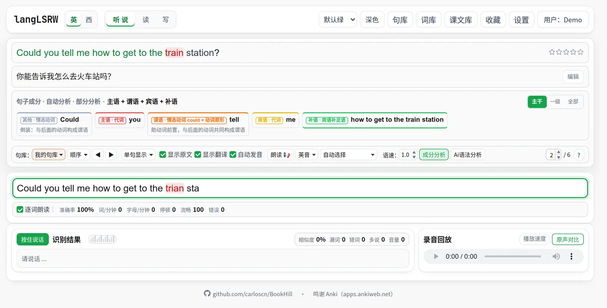
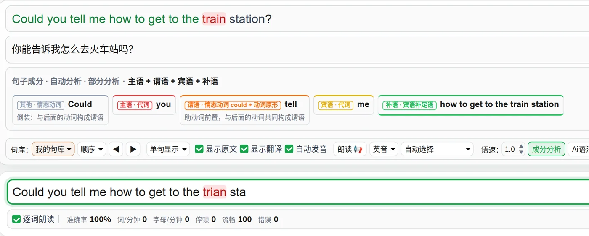
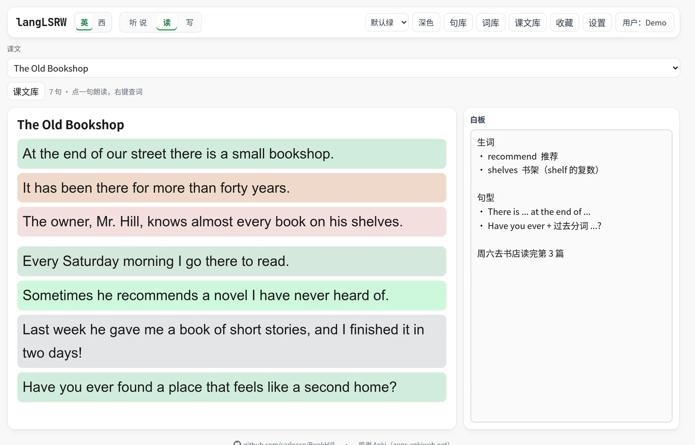
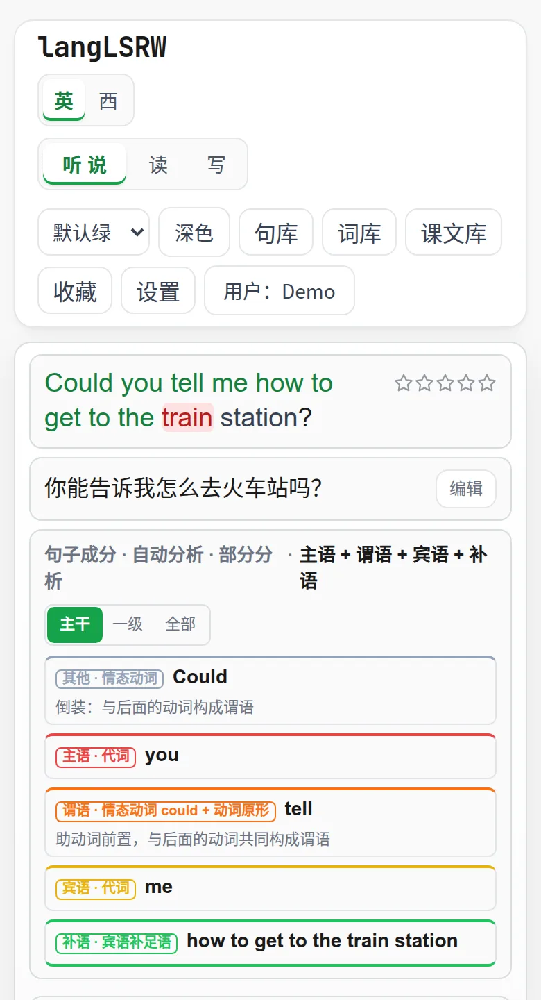

用你自己的句子，
练听说读写。
BookHill 是在浏览器里练英语和西班牙语的工具（应用里叫 langLSRW，取 Listen · Speak · Read · Write）。听一句写一句、跟读打分、读课文、背单词，练的都是你自己导入的材料。

一个网页，把听说读写都练到。
不用装软件。打开网页，导入一份句子，马上开始。
逐句听写
听一句写一句，逐词实时反馈，并统计准确率、速度、流畅度和错误数。支持顺序、随机和只练错句。
跟读评分
按住说话，语音识别和原句对比，给出相似度，标出漏说、说错和多说的词，还能回放录音。
课文阅读
课文按句拆开，每句一种底色。点一句就朗读，右键一个词就查词典，旁边的白板记笔记。
导入你自己的句库
txt、TSV、LRC 歌词、Anki / Tatoeba 导出，或者直接选一张 Google 表格。导入前先预览，重复的句子自动合并。
离线词典和背词
词典装进浏览器，查词不联网。内置牛津 3000、四六级、雅思、托福、GRE 词表，按间隔重复安排预习、复习和测验。
句子成分分析
一键标出主语、谓语（含时态语态）、宾语、表语、补语、定语和状语，一直拆到从句和短语。免费，秒出结果。
先听清，再写对，最后说出来。
同一句话，在一个页面里练完听写和跟读。卡住的句子打个星，以后只练错句。
- 听得清楚 — 朗读可调语速，英音美音可选，单词可以单独重放；有音频和 LRC 字幕的材料逐句播放原声
- 看得明白 — 成分分析把句子拆成主干、一级和全部三个层次；英语句子还能用你自己的 AI 接口做分层语法讲解
- 手不离键盘 — 上一句、下一句、朗读、跟读都有快捷键，并且可以自己改


一篇课文，配一块白板。
把文章贴进课文库，读页面会用大字号按句排好。读到哪一句就点哪一句。
- 按句拆分 — 空行分段，句号、问号、感叹号分句，每句一种底色，长段落也不会读串行
- 点句朗读，右键查词 — 不用离开课文就能听发音、看释义
- 白板跟着课文走 — 生词、句型、心得写在旁边，下次打开这篇课文还在
学习记录归你，不归服务器。
服务器上只有网页代码和一个不保存任何内容的句法分析服务。你导入和练习的一切，只在你自己的设备和云盘里。
存在你自己的 Google Drive
登录统一账户并连接云盘后，句库、词表、课文、收藏和复习进度同步到你 Drive 里看得见的 langLSRW/ 文件夹。只申请 drive.file 权限，看不到你的其他文件。
不登录也能用
选「本机用户」，数据全部留在浏览器里，离线也能练。随时可以导出一份 JSON 备份，换电脑再导入。
AI 密钥加密保存
AI 接口的 API Key 用 AES-GCM 加密后只存在本机，绑定账户和接口地址，从不显示、导出或同步。页面有严格的内容安全策略，只允许本站和 Google 的脚本运行。
电脑上顺手，手机上也能用。
一套界面适配桌面和手机宽度，通勤路上也能刷几句。
- 浅色和深色 — 默认跟随系统，也可以手动切换
- 五套配色 — 默认绿、GitHub、Reddit、Twitter、Anki，字体和语法颜色都能改
- 推荐 Chrome 或 Edge — 朗读和语音识别用的是浏览器自带的 Web Speech；Firefox 能听写，但不能跟读评分

三步，从第一句开始。
不需要安装。词典和现成的句库放在 GitHub 数据发布里，下载一次就好。
-
打开并登录
打开 lang.mltz.tech，用统一账户登录（支持 Google、用户名或 Passkey），或者直接以本机用户开始。
-
下载词典和句库
从 数据发布 下载：英汉 ECDICT、西语 Wiktionary 词典，以及 30,150 句英语、134,910 句西语例句。
-
安装、导入、开练
词典在 设置 → 本地词典 → 从文件安装；句库在 句库 → 导入。也可以导入你自己整理的句子。
导入你自己的材料
# 一行一句，竖线左边是句子，右边是翻译。# 开头的行是注释
Hello | 你好
Could you tell me how to get to the train station? | 你能告诉我怎么去火车站吗？
¿Qué es eso? | 那是什么？
# 句子⇥翻译，或 编号⇥句子⇥翻译；Anki、Tatoeba、manythings.org 的导出文件直接可用
The early bird catches the worm. 早起的鸟儿有虫吃。
1276 Let's try something. 我们试试看吧。
# 词表同样的格式；也可以一行一个词，释义从离线词典里查
apple | 苹果
recommend | 推荐
bookshop
# 在 Google 的文件选择器里选一张表格，然后选好： 1 哪一列是句子，哪一列是翻译 2 第一行是不是表头 3 新建句库，还是追加到已有句库 # 之后改了表格，点「从表格更新」，新行按同样的去重规则合并进来
每次导入都会先预览。追加到已有句库时，重复的句子（不区分大小写和空格）可以选择合并翻译、保留原有或者覆盖。